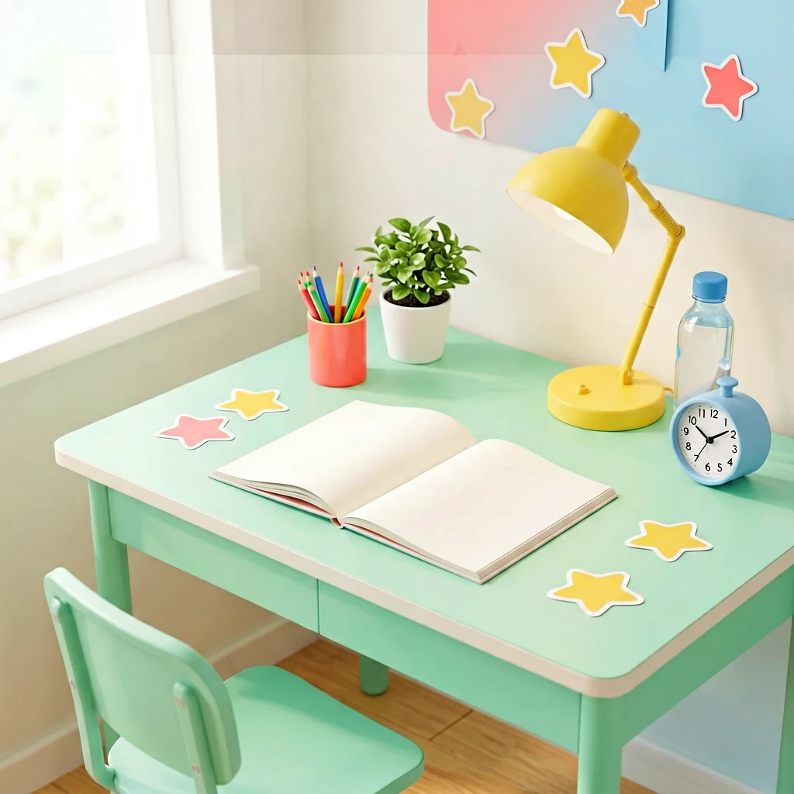
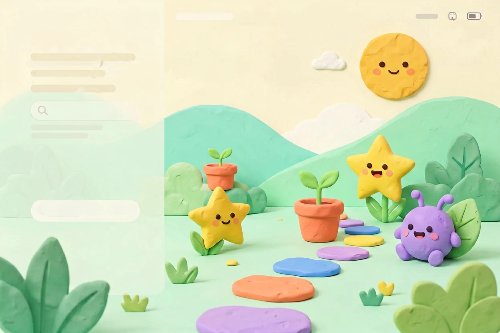

选择入口 / CHOOSE YOUR MODE
先选一个
适合今天的工作台
三种节奏，分别服务于成长、学习与游戏化陪伴。选一套，开始今天的一小步。
选择工作台每个版本独立保存数据 · 随时可以切换01 — 03
成人成长工作台
今日计划、生活分区、阅读记录、长期目标与每周复盘。
进入成人版 02 / LEARNING上次使用
CHILD / LEARNING儿童学习工作台
语数英课程、错题本、阳光奖励、植物成长、独角兽和家长互动。
进入儿童版 03 / PLAY上次使用
PRESCHOOL / PLAY幼儿学习工作台
少文字、大图卡，适合低年级孩子每天选一项、做一项。
进入幼儿版